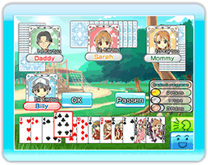

Das Ziel eines jeden Spiels ist es, als erster alle Karten der eigenen Hand loszuwerden und "Daifugo" zu werden. Das bedeutet "die wohlhabendste Person".
Die schwächste Karte ist die 3. Danach folgen 4, 5, 6, 7, 8, 9, 10, B, D, K, A und die 2. Die 2 ist die stärkste Karte. Bei der Verwendung eines Jokers für sich allein wird dieser zur stärksten Karte. (Allerdings schlägt die Pik 3 den Joker).
- Der Spieler mit der Karo 3 beginnt das Spiel. Dieser Spieler ist auch der Kartengeber. Der Viertplatzierte des ersten Spiels ist der Geber des zweiten Spiels. Auf diese Weise wird in allen folgenden Runden der Kartengeber bestimmt. Der Kartengeber beginnt das jeweilige Spiel.
- Der nächste Spieler muss eine Karte ablegen, die stärker ist, als die zuvor ausgespielte Karte.
- Wenn Du keine Karte ausspielen kannst oder willst, kannst Du passen.
- Falls alle Spieler passen, beginnt die neue Runde bei demjenigen Spieler, der in der Runde zuvor eine Karte abgelegt hat.
- Der Kartengeber entscheidet, wie viele der gleichen Karten abgelegt werden können. (Bsp. Wenn man 3 Könige hat, legt man 3 Karten ab. Hat man 3 Asse, legt man beide ab.)
- Man kann drei oder mehr aufeinander folgende Karten derselben Farbe ablegen. (Bsp. Herz 5, 6 und 7)
- Falls der Kartengeber mehrere Karten ablegt, muss der nachfolgende Spieler die gleiche Anzahl an Karten ablegen. Außerdem müssen diese Karten einen höheren Wert besitzen.
- Wiederholt die Schritte 2 bis 7. Derjenige Spieler, welcher zuerst alle Karten ablegt, gewinnt in dieser Runde den ersten Platz.
- Beim Beginn des zweiten Spiels, nach dem Austeilen der Karten, tauschen die erst- und viertplatzierten Spieler zwei Karten. Die zweit- und drittplatzierten Spieler tauschen eine Karte.
Die erst- und zweitplatzierten Spieler geben Karten ab, die für sie unnütz sind. Die dritt- und viertplatzierten Spieler geben ihre stärksten Karten ab.
Nach dem Kartentausch beginnt das 2. Spiel.
Der erste Spieler, der 6 Punkte erzielt, gewinnt das Spiel. Der Spieler auf dem ersten Platz erhält 2 Punkte, der Spieler auf dem zweiten Platz erhält einen Punkt. Die Spieler auf den Plätzen 3 und 4 erhalten keine Punkte.
●Revolution
Beim Ablegen von 4 oder mehr Karten gibt es eine "Revolution". Bei einer "Revolution" tauschen die Kartenwerte. (Die stärkste Karte - die 2 - wird nun zur schwächsten Karte und die schwächste Karte - die 3 - wird nun zur stärksten.)
●Verhängnisvoller Fall
Falls der 1. Spieler des vorherigen Spiels diesen Platz im 2. Spiel nicht halten kann, fällt er im nächsten Spiel automatisch auf Platz 4.
●Einschneidende Achten
Wird eine 8 ausgespielt, entweder alleine oder in Kombination mit anderen Karten, startet eine neue Runde. Derjenige Spieler, der die 8 abgelegt hat, wird zum Kartengeber.
●Joker
Der Joker kann als Platzhalter verwendet werden (er kann den Wert jeder anderen Karte annehmen).
●Pik 3en
Die Pik 3 schlägt den Joker. In einem solchen Fall endet die Runde und der Spieler mit der Pik 3 beginnt eine neue Runde.
※Während einer "Revolution" gelten die "Pik 3en" nicht.
●Bindung
Falls zwei aufeinanderfolgende Spieler Karten derselben Farbe ausspielen, darf der nächste Spieler bis zum Ende der Runde nur Karten dieser Farbe ausspielen. Man bezeichnet dies als "Gebunden".
※"Gebundene" Regeln gelten nicht während des Nintendo WFC Spiels.
●Unvereinbarlicher Verlust
Wenn man eine 2, eine 8 oder einen Joker gewinnt, erleidet man einen "Unvereinbarlichen Verlust".
Auch wenn man Pärchen oder noch bessere Karten besitzt, gilt es als "Unvereinbarlicher Verlust", solange das Pärchen eine 2, eine 8 oder einen Joker enthält.
※Während einer "Revolution" gilt das Ausspielen einer 3 als "Unvereinbarlicher Verlust".